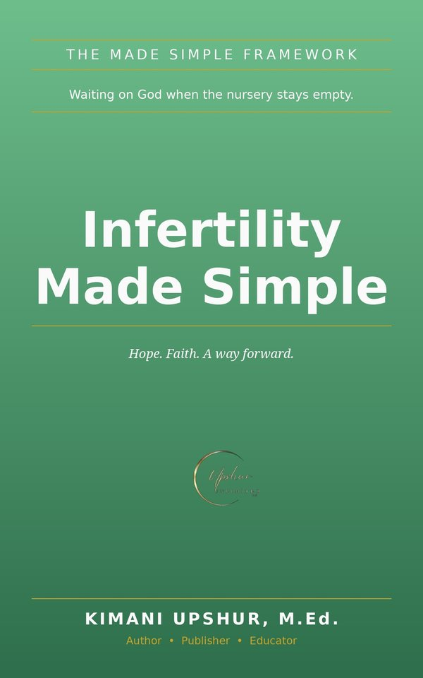

Home / Books / Christian Living

Try the Free Companion App
There's a free interactive companion to this book. Infertility & Hope — Scriptures for couples waiting for children. Use it anytime — no signup needed.
Readers Also Browse
More Christian Living titles.